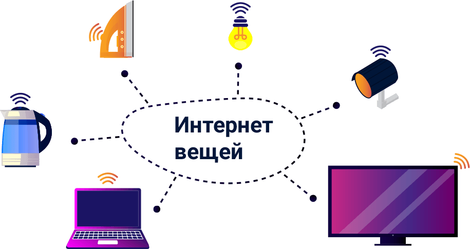

Это первая часть спецпроекта о Web 3.0 — новом этапе в развитии Всемирной паутины.
В этом материале мы поговорим об истории онлайн-мира, децентрализации, причинах перехода к Web 3.0 и технологиях «под капотом» новой сети. Специалисты из Waves поделились своими мнениями о будущем сети третьей версии.
Краткая история сети
Веб (Всемирная паутина, World Wide Web) — это распределенная система информационных ресурсов — веб-сайтов, связанных гиперссылками. Физически ресурсы расположены на разных компьютерах, подключенных к интернету. Работа веба опирается на URL-ссылки и DNS-сервера. URL (Uniform Resource Locators) — это ссылки вроде https://forklog.com — читаемые адреса страниц и документов в сети. А DNS-сервера связывают такие ссылки с физическими адресами компьютеров в интернете.
Интернет — это глобальная система соединений между компьютерами. Это оптоволоконные кабели на дне океана, медные провода в квартирах и протоколы для обмена информацией и идентификации устройств. Помимо веба интернет обслуживает email и другие системы передачи данных.
Понятия «веб» и «интернет» часто взаимозаменяются, но это не одно и то же.
Web 1.0
Кто-то еще помнит мир до прихода Всемирной паутины. Ради новостей или любимых передач люди собирались у телевизоров и радио по расписанию. Репортажи и фильмы производили крупные компании или государственные предприятия, а обратной связи с авторами не было. Анализ аудитории ограничивался опросами и специальными устройствами вроде аудиметров Nielsen, которые нужно было устанавливать в домах зрителей, чтобы автоматически собирать статистику просмотра ТВ или прослушивания радио.

Ради новостей или любимых передач люди собирались у телевизоров и радио по расписанию
В 1989 сотрудник CERN Тим Бернерс-Ли изобрел веб. Годом позже он разработал первый веб-браузер. В 1991 браузер задействовали для обмена информацией между научными организациями и вскоре представили широкой публике. А 6 августа 1991 года Бернерс-Ли выложил первый веб-сайт на первом веб-сервере с адресом http://info.cern.ch/. Там изобретатель представил инструкции по использованию программ для работы с вебом, а позже — каталог других сайтов.

С появлением веб-сайтов контент, который раньше поставлялся по расписанию по радио и ТВ, стал доступен в любое время с любого подключенного к интернету компьютера.
В 1993 CERN сделала технологию WWW общественным достоянием. В 1994 году Тим Бернерс-Ли основал консорциум Всемирной паутины (World Wide Web Consortium, W3C) — организацию, которая разрабатывает технические стандарты для веба и интернета. Началась эра Web 1.0.
С появлением веб-сайтов контент, который раньше поставлялся по расписанию по радио и ТВ, стал доступен в любое время с любого подключенного к интернету компьютера.
Сам Бернерс-Ли охарактеризовал Web 1.0 как сеть «только для чтения» (read-only web). Эта характеристика отражает то, что информация была представлена на статичных страницах.
Большинство пользователей потребляли контент, размещенный в сети меньшинством. Сеть населяли простые ресурсы: сайты с объявлениями, онлайн-каталоги магазинов, тематические форумы и персональные страницы. Возможность прокомментировать контент ограничивалась отдельной гостевой страницей на сайте, а высылать комментарии нужно было с помощью email-клиента.

Ранняя Всемирная паутина была хаотичной децентрализованной системой из множества независимых компьютеров, которые общались между собой напрямую посредством модемов и телефонных сетей. Позднее подключение к интернету стало доступнее благодаря централизованным интернет-провайдерам и выделенным линиям.
Мощные персональные компьютеры становились доступнее для пользователей. Возникли технологии DHTML и AJAX, на которых основаны современные веб-приложения.
К концу 90-х популярность интернет-компаний и завышенные ожидания от новой постиндустриальной экономики привели к инвестиционному ажиотажу. Люди охотно инвестировали в «доткомы» — компании с бизнесом в интернете. Такие компании часто стремились скорее масштабироваться за счет денег инвесторов и часто вообще не получали прибыль. В таком режиме деньги быстро кончались, компании ликвидировали, а инвесторы разочаровывались. В 2000 году начался «крах доткомов»: множество интернет-компаний разорились, а оставшиеся поделили между собой бизнес-ниши и стали современными веб-гигантами. В индустрии назрели перемены, но переход к новым технологиям был только частью этих перемен.
При этом основные новшества следующей эпохи заключались не в технологии, а в способах использования технологии.
Основные новшества следующей эпохи заключались не в технологии, а в способах использования технологии.
Web 2.0
Впервые использовал термин Web 2.0 Дарси Динуччи в 1999 году. Под Web 2.0 Динуччи подразумевал будущее сети, в котором технологии HTML и гиперссылки используются множеством разных устройств. Сегодня эти представления скорее описывают технологии Интернета вещей, а термин Web 2.0 приобрел новое значение.
Вторая жизнь понятия началась после первой Web 2.0 Conference в 2004 году. Тогда в своих докладах Дейл Догерти и известный издатель Тим О’Райли описали новый веб как платформу для приложений и подчеркнули ценность контента, который генерируют сами пользователи.
Web 2.0 сейчас — это сеть интерактивных веб-сайтов и платформ, где контент производят пользователи, а не владелец ресурса. Facebook, YouTube и Twitter — платформы эпохи Web 2.0, ориентированные на пользовательский контент и социальные взаимодействия.
В Web 2.0 потребители контента одновременно выступают его создателями.
Мобильная революция начала 2000-х дала нам карманные компьютеры, способные записывать и публиковать контент. Появились сайты, созданные для просмотра контента на мобильных устройствах. Отсутствие привязки к рабочему столу с домашним ПК вместе с датчиками местоположения в смартфонах открыли нишу для геолокационных сервисов. Возникли мобильные приложения и платформы для их распространения.
В новой паутине стали популярными краудфандинговые проекты вроде Kickstarter и IndieGoGo.
С общедоступными средствами для распространения контента людям стало проще доносить послания другим людям по всему миру. Как следствие, в нашей речи закрепились понятия для описания новых социальных явлений в сети: «троллинг», «флуд» и «спам».
- В мире без Всемирной паутины мы собирались у телевизоров, чтобы посмотреть вечерний новостной репортаж, подготовленный профессиональными журналистами.
- В мире Web 1.0 мы получили возможность посмотреть все тот же новостной репортаж на экране ПК в удобное время.
- В мире Web 2.0 появилась возможность отслеживать новости в постах пользователей Facebook и публиковать собственные наблюдения где и когда угодно.
С коммерциализацией сети появились крупные интернет-провайдеры, а доступ в интернет стал услугой централизованных организаций. Это повысило качество услуг и сделало интернет общедоступным. Вместе с тем доступ в онлайн контролируют крупные компании, которые руководствуются финансовыми интересами и подчиняются государственным структурам.
В сравнении с прошлой эпохой сеть тоже стала более централизованной. Веб-гиганты этого периода вроде Google, Facebook и Amazon контролируют облачные сервисы, крупные вычислительные центры и данные о миллионах пользователей.
Эпоха Web 2.0 продолжается с середины двухтысячных, однако представления о следующей стадии развития сети — Web 3.0 — сформировались еще в первые десять лет существования Всемирной паутины.
Если серверы Amazon выйдут из строя, пострадают бизнесы по всему миру. Наглядным примером стала блокировка сервиса Telegram в России, из-за которой в стране закрыли доступ к 800 тысячам IP-адресов Amazon.
Контроль Facebook над личными данными сотен миллионов пользователей приводит к крупным утечкам вроде инцидента с компанией Cambridge Analytica в 2018 году.
Эпоха Web 2.0 продолжается с середины двухтысячных, однако представления о следующей стадии развития сети — Web 3.0 — сформировались еще в первые десять лет существования Всемирной паутины.
Web 3.0
Первая центральная идея Web 3.0 — семантическая паутина (semantic web). Не обошлось без создателя Всемирной паутины Тима Бернерса-Ли, который впервые описал семантическую паутину в 1994 году. Позднее его статья в Scientific American 2001 года принесла идее популярность в интернет-сообществе, а понятия «Web 3.0» и «семантическая паутина» стали почти взаимозаменяемыми. Сейчас семантическая паутина — одна из основных технологий в основе новой сети.
В 2007 году автор современного термина Web 2.0 Тим О’Рейли разграничил понятия Web 3.0 и семантической паутины. О’Рейли описывал Web 3.0 как взаимодействие между интернетом и офлайн-миром. Это взаимодействие реализуется благодаря датчикам и смарт-устройствам — тому, что сейчас называют «интернетом вещей».
О’Рейли также привел спорную цитату американского автора Новы Спивака:
«Web 3.0 — эра, в которую мы будем обновлять бэкенд сети после десятилетия фокуса на фронтэнде (Web 2.0 был об AJAX, тегах и других фронтэнд-инновациях в пользовательском опыте).»
О’Рейли не согласился с тем, что Web 2.0 — эпоха фокуса на фронтенде, и настоял на том, что все важные прорывы этого периода происходили в бэкенде. Однако представления Спивака относительно семантической паутины и технологий следующего этапа эволюции сети оправдываются. Он писал, что Web 3.0 станет периодом с 2010 по 2020 год, а семантическая паутина будет важной частью экосистемы. В то же время должны произойти и другие технологические прорывы. Этими прорывами стали блокчейн, машинное обучение и уже упомянутый интернет вещей.
Помимо прогресса технологий новая эра сети подразумевает социальные и экономические перемены.
«Web 3.0 не стоит понимать исключительно как термин из области информационных технологий. Развитие новых способов взаимодействия в онлайне требует от людей еще и социокультурных изменений. Это можно сравнить с тем, как изменились социальные аспекты взаимодействия между людьми в 2000-х, когда массовый доступ в интернет и социальные сети распространились на большую часть земного шара, окончательно уничтожив границы владения и сдерживания информации», Александр Иванов, основатель и генеральный директор Waves.
В погоне за меняющимся рынком веб- и ИТ-гиганты инвестируют в решения для новой ниши Web 3.0, но у них все равно не будет привычного преимущества перед молодыми проектами. Не все крупные игроки на рынке смогут пережить переход.
«Все гиганты рано или поздно обращают внимание на возникающие технологии. Но технологические революции очень редко начинаются с крупных игроков. Мы ожидаем скорее появления новых единорогов, какими были в свое время Facebook и Amazon, нежели эффективной трансформации старых игроков во что-то новое», Глеб Сычев, директор по маркетингу Waves.

Web 3.0 сегодня
Web 3.0 — это веб-инфраструктура из нескольких основных технологий: блокчейна, машинного обучения и ИИ, семантической паутины и интернета вещей. Каждая из этих технологий — неотъемлемая часть будущей сети со своей ролью в экосистеме.
Начнем с семантической паутины. Суть этой концепции — сделать всю информацию в сети читаемой и «понятной» для машин. Для реализации семантической паутины всей информации в сети нужно присвоить метаданные — информацию об информации. Благодаря метаданным алгоритм может «понимать» контекст, строить логические взаимосвязи между кусочками информации и формировать ассоциации, почти как люди.
Ключевой элемент в реализации семантической паутины — набор спецификаций Resource Description Framework (RDF) от W3C. RDF — это модель описания информации через специальные понятные машине утверждения — триплеты. Триплет состоит из трех частей: «субъект», «предикат» и «объект».
Утверждение «яблоня — плодовое дерево» в модели RDF будет выглядеть примерно как «яблоня — входит в множество — плодовые деревья».

Такими утверждениями можно описать что угодно: человека, веб-приложение или музыкальное произведение.
Одна из реализаций RDF — Дублинское ядро (Dublin Core). Это база данных понятий английского языка для описания любого цифрового или физического ресурса вроде видео на YouTube или бумажной книги.
Популярный формат электронных книг .epub использует Дублинское ядро для представления метаданных в файлах OPF.
Машинное обучение — это система методов, которую компьютерные алгоритмы используют для решения задач без непосредственных инструкций. Алгоритм обучается выполнению конкретной задачи. Он анализирует набор данных и самостоятельно выявляет в них закономерности, которые потом использует в выполнении задачи.
Представьте алгоритм, который отличает кошек от собак на фотографиях. Чтобы все получилось, программисты показали алгоритму очень много фотографий кошек и сказали, что это кошки, а потом показали столько же фотографий собак и сказали, что это собаки. Алгоритм проанализировал все фото и определил, какие данные на фото соответствуют тегу «кошка», а какие — тегу «собака». Теперь вам не придется самостоятельно различать животных на фото.

Система IBM Watson и библиотека Tensorflow от Google Brain — примеры популярных инициатив в области машинного обучения и ИИ.
Концепция Интернета вещей (Internet of Things, IoT) описывает сеть из множества устройств, которые снабжены датчиками и подключением к интернету, взаимодействуют между собой и могут контролироваться удаленно. Интернет вещей связывает мир веб-приложений с миром «умных» физических объектов: тостеров, автомобилей и домов.

Технологии «умного дома» вроде замков и термостатов с удаленным управлением — элемент Интернета вещей. Такой дом может автоматически регулировать обогрев и освещение, узнавать хозяина у входной двери и оповещать о забытом в духовке пироге. Все потому, что в каждом выключателе, термостате и кухонном приборе установлены датчики и контроллеры, которые обмениваются данными и инструкциями через интернет.
Согласно прогнозам TechJury, к 2025 году количество устройств, подключенных к Интернету вещей, превысит 64 млрд.
Согласно прогнозам TechJury, к 2025 году количество устройств, подключенных к Интернету вещей, превысит 64 млрд.
Для Web 3.0 устройства Интернета вещей выступают не только терминалами доступа в сеть, но и постоянными источниками данных о физическом мире. Так в сети накапливаются подробные и непредвзятые сводки о маршрутах движения людей в пробках с привязкой ко времени и географии.
С расширенными возможностями для поиска и анализа информации в сети такие данные можно будет использовать как угодно: в урбанистике, статистике или поисках лучшего маршрута в офис. С другой стороны, когда контроль над большими данными оказывается у централизованной структуры, растет риск утечки информации. А еще интересы такой структуры могут не совпадать с интересами сообщества.
Блокчейн — технология распределенных баз данных. Информация в блокчейне записана в цепочке блоков, связанных в строго определенной последовательности. Система на базе блокчейна способна работать без центральной администрации и доверия между участниками. Вместо директора решения в такой системе принимаются через голосование. А действия участников подчиняются протоколу консенсуса — набору правил для создания и записи блоков в реестр.
В блокчейне биткоина блоки содержат информацию о криптовалютных транзакциях между участниками. Протокол консенсуса дает участникам право добавить блок с транзакциями в реестр только после решения криптографической головоломки.
Кроме данных о финансовых транзакциях, блокчейн может хранить любую информацию: медицинские записи, музыку или данные с термометра в вашей гостинной.
Блокчейн-технологии играют роль связующего элемента экосистемы Web 3.0. Распределенный реестр — основа децентрализованной инфраструктуры сети, в которой веб-приложения могут обмениваться информацией напрямую и все участники равноправны.
«Web 3.0 стоит рассматривать как новый инфраструктурный слой — децентрализованную сеть — которая будет развиваться вместе с традиционным централизованными технологиями и рождать гибридные модели», отметил Глеб Сычев, директор по маркетингу Waves.
Благодаря децентрализации переход к Web 3.0 может решить проблемы непрозрачности веб-сервисов, цензуры в сети и конфиденциальности личных данных. Открытый общественный реестр обеспечивает прозрачную отчетность. Без центральной власти один участник не может навязывать другим решения или получить доступ к чужим зашифрованным данным.
«Блокчейн решает проблему доверия между большим количеством участников. Гарантом легитимности проводимых операций выступает не централизованная организация, а механизм консенсуса, который известен всем участникам. Развивая эту мысль в контексте интернета, можно сказать, что Web 3.0 — это новая прозрачная и децентрализованная версия сети», Александр Иванов, основатель и генеральный директор Waves.
Блокчейн-инфраструктура для Web 3.0 уже строится. Например, проект Brave предлагает браузер с открытым кодом и новым подходом к онлайн-рекламе, проект Storj — децентрализованную систему для хранения файлов, а Waves Keeper — универсальное решение для авторизации.
Футуристические прогнозы
Нельзя сказать, когда именно наступит эра Web 3.0, но можно предположить, как будет меняться наша жизнь по мере перехода к ней. Вместе с экспертами из команды Waves мы представили несколько таких изменений.
- Умный поиск
- С новыми возможностями поисковики Web 3.0 способны отвечать на открытые вопросы и генерировать новую информацию по запросу пользователя. Роль поисковика совместилась с ролью личного ассистента.
- Умные вещи
- Реализация Интернета вещей сделала всю электронику умной и подключенной к интернету. Тостер, автомобиль и светильник автономно собирают данные об окружающей среде и пересылают их в распределенное хранилище. Кофеварка знает, когда вам захочется кофе и заранее готовит его, пока вы спите.
- Авторизация
- Никто не помнит, что такое логин, пароль и фишинг. Для авторизации внедрены специальные решения, которые шифруют и хранят ключи локально на устройстве. Пользователь просто заходит на нужный ресурс, а аутентификатор занимается доступом и безопасностью.
- Децентрализованные приложения
- Вместо привычных веб-приложений все пользуются dApps — децентрализованными приложениями, свободными от цензуры и государственных ограничений. Для разработки dApps построены удобные онлайн-платформы, где можно запускать, тестировать и поддерживать приложения любой сложности. Кроме того, код dApp чаще всего публичен, а значит любой может проверить, как работает то или иное приложение.
- Демократия данных и большие данные
- Любой пользователь в сети способен собирать и анализировать информацию не хуже специалиста-исследователя — достаточно попросить об этом алгоритмического ассистента. В таких условиях информация становятся доступнее и прозрачнее, раз любую статистику можно проверить самостоятельно. В сумме перечисленные технологии делают Всемирную сеть машиной для сбора, хранения и анализа больших данных в масштабах, недоступных ни одной из существующих корпораций: миллиарды устройств собирают данные, блокчейн хранит их, семантическая паутина категоризирует, а алгоритмы и ИИ анализируют.
- Голосование и государственный аппарат
- Голосования проходят в прозрачных блокчейн-системах, где пользователи авторизуются с помощью безопасных децентрализованных решений. Манипуляции с открепительными талонами, самозванцы на избирательных участках и ошибки в подсчетах остались в прошлом. Как и голоса избирателей, информация о госзакупках и тратах вносится в открытый неизменяемый реестр, который систематически проверяют энтузиасты-оппозиционеры.
- Приватность
- В децентрализованной сети больше нет единой точки доступа к приватной информации. Все непубличные данные зашифрованы и распределены в хранилище. Без ключа никто не может расшифровать ваши медицинские записи или личную переписку.
Заключение
Переход к новой эре происходит прямо сейчас: для всех основных концепций инфраструктуры Web 3.0 существуют прототипы, технологии продолжают развиваться.
«Идет созревание блокчейн-технологий и искусственного интеллекта. Скоро мы увидим больше инструментов для нативного объединения баз данных и вычислительных решений, библиотеки для соединения разных технологических стеков, кросс-платформенность и стандартизация информации», Александр Иванов, основатель и генеральный директор Waves.
Прогресс технологий делает переход к Web 3.0 возможным. Централизация сети в руках веб-гигантов, систематические нарушения приватности данных, проблемы доступа к контенту и безопасности делают переход к Web 3.0 неизбежным.
На этом заканчивается теоретическая часть спецпроекта с историей и теорией Web 3.0. Во второй части мы подробнее рассмотрим существующие решения для экосистемы Web 3.0 и их роль в новой сети.
Розыгрыш
Авторизуйтесь на ForkLog через Waves Keeper, чтобы участвовать в розыгрыше аппаратного криптокошелька Ledger Nano S и 1000 токенов waves (~$1300).

Чтобы участвовать в розыгрыше, авторизуйтесь на ForkLog через Waves Keeper в десктопном браузере с ДД.ММ по ДД2.ММ2. Мы объявим адрес кошелька победителя ДД3.ММ3. в Telegram-каналах ForkLog и Waves.
Победителю нужно будет подтвердить владение кошельком. Инструкцию опубликуем в день оглашения результатов розыгрыша. Доставку аппаратного кошелька оформим через курьерскую службу по выбору победителя.
Победителя определит блокчейн-рандомайзер от ForkLog и Waves. Это наша новая секретная разработка, мы уже заканчиваем страницы и скоро все опубликуем.